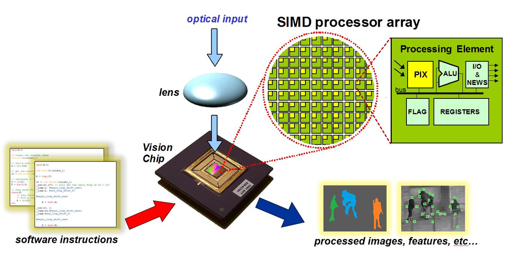
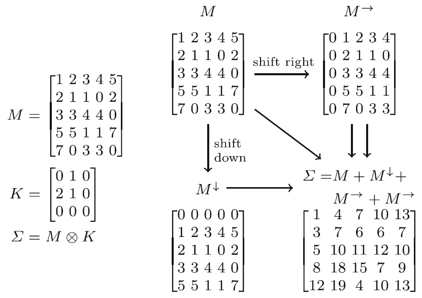
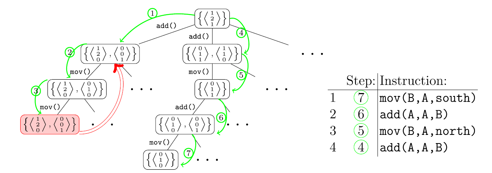
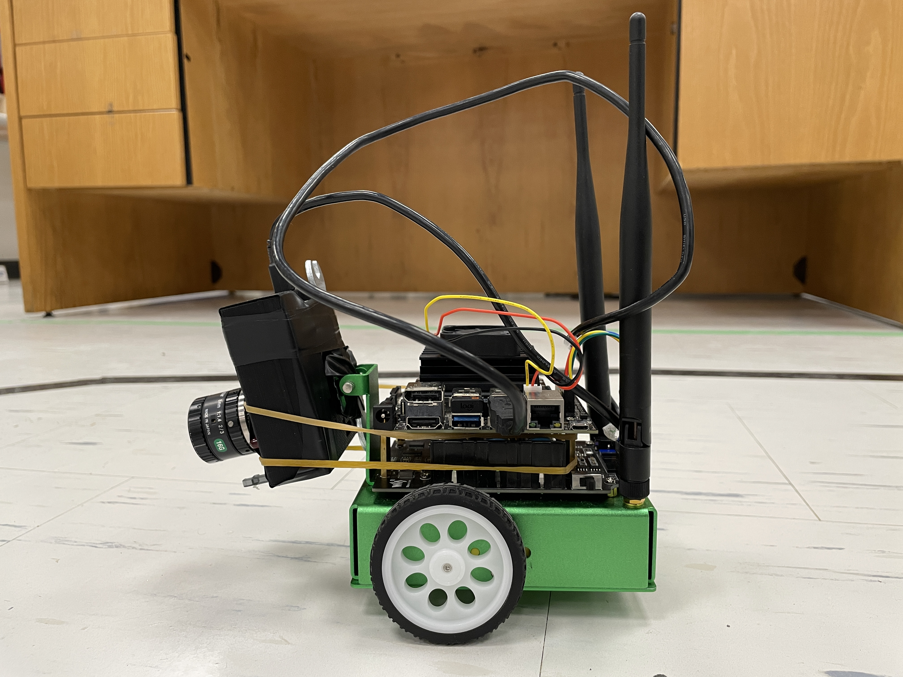

Compiling CNNs with Cain: focal-plane processing for robot navigation
Robotics and Computer Vision Lab - Toronto Metropolitan University, Canada
Member(s) : Abrar Ahsan, Yingying Li, Ali Babaei
Supervisor(s) : Dr. Sajad Saeedi
Traditional vision systems transfer images from a camera to a separate processor, adding latency
and energy costs. SCAMP-5 processes images directly on the sensor, but its limited memory and lack
of multipliers make CNN implementation difficult. This study introduces Cain, a compiler that generates
efficient code for multiple convolution kernels by reusing common computations and using simple operations
instead of multiplication. It also presents AnalogNavNet, a lightweight convolutional nerual network (CNN) for robot autonumous navigation and
collision avoidance, evaluated through ROS/Gazebo simulations and real-world experiments. The SCAMP-5 navigation system achieved 85 FPS and an 85% navigation success rate,
matching the tested GPU system’s success rate while using approximately 15% of its energy per frame.
SCAMP-5 is a vision sensor that can capture and process images directly on the same chip. Its 256 × 256
pixel array contains a small processing element at each pixel, allowing all pixels to perform the
same operation in parallel. These processors can store pixel values, exchange data with neighboring pixels,
and perform simple operations such as addition, subtraction, and division by two.
However, they have limited registers and no multiplication instruction,
making conventional CNN computations difficult to implement. Convolutions must therefore
be expressed through these basic operations, and Cain helps automate and optimize this process.

SCAMP-5 vision sensor
Convolution combines neighboring pixel values according to the weights in a kernel. In this example, the current pixel and the pixel above each have a weight of 1, while the pixel on the left has a weight of 2. For the pixel in the second row and second column, the result is 1 + 2 + 2 × 2 = 7. This can also be calculated as 1 + 2 + 2 + 2 = 7, replacing multiplication with repeated addition. Shifting the image aligns the required neighboring values, allowing the same calculation to be performed across all pixels in parallel. Cain automates this process by compiling convolution kernels into SCAMP-5 instructions, such as move, add, subtract, and divide by two. It searches backward from the desired kernels to the original image input, exploring different instruction sequences and reusing common intermediate results. The resulting path is then converted into executable code, reducing redundant computation while working within the hardware’s limited registers.

Multiplier-Free convolution using image shifts and additions

Cain generating convolution instructions for the SCAMP-5
AnalogNavNet is a lightweight CNN designed for robot navigation and collision avoidance using SCAMP-5. It processes a 256 × 256 grayscale image through three convolutional layers, each followed by ReLU. The first layer uses two 3 × 3 kernels to produce two feature maps. The second layer combines these through a kernel with two input channels, and the third uses a single 3 × 3 kernel. The trained weights are approximated as multiples of 1/8 for multiplier-free computation. Cain generates 24 instructions for the first layer’s two kernels, 10 and 9 for the second layer’s respective input-channel kernels, and 14 for the third layer’s kernel. Average pooling reduces the final feature map to 8 × 8 before transferring it to the onboard microcontroller. A fully connected layer with 30 neurons then feeds two branches that predict left or right and forward or stop. Training images are labeled as Left, Right, Straight, and Brake. Left and Right indicate scenes requiring a right turn and a left turn, respectively, while Straight and Brake indicate moving forward and stopping. These labels teach the network to connect visual features with appropriate navigation actions.

AnalogNavNet and the four training targets

Convolutional kernels of AnalogNavNet
AnalogNavNet was first trained using labeled images collected from corridor environments in ROS and Gazebo. Different wall textures were used to help the network learn varied visual features and to prevent overfitting. The fully connected layer initially contained 200 neurons and was later reduced to 30 and retrained for deployment. A SCAMP-5 simulator running in ROS was used to check the behavior of Cain-generated instructions. The network was also further trained using real corridor images. The figure below compares navigation trajectories at 20, 40, 60, and 80 FPS in simulated corridor and racetrack environments using the full-floating-point network. Each cross marks a collision. Higher frame rates allowed more timely control updates, producing smoother trajectories and fewer collisions. These experiments demonstrate why fast visual processing matters for robot navigation.

Trajectory of robot under different FPS in a simulated corridor and a simulated racetrack environment
The live navigation performance of AnalogNavNet in a simulated obstacle-free corridor is demonstrated in the video below.
AnalogNavNet performance in a simulated obstacle-free corridor, 80 FPS
Finally, AnalogNavNet was tested on a physical differential-drive mobile robot equipped with an NVIDIA
Jetson Nano and a SCAMP-5 vision sensor in both real corridor and racetrack environments. Over
20 runs, SCAMP-5 achieved an 85% success rate, matching the GPU and
exceeding the VPU’s 80% and CPU’s 60%. Processing benchmarks showed that SCAMP-5 operated at
85 FPS, compared with 31 FPS for the VPU, 28 FPS for the GPU, and 17 FPS for the CPU. The Jetson
Nano with SCAMP-5 consumed 58.94 mJ per frame, approximately 15% of the GPU configuration’s
energy per frame.

Mobile robot equipped with an NVIDIA Jetson Nano and SCAMP-5 vision sensor
The videos below present the performance of the robot in these two environments.
Mobile robot autonomously navigating in a corridor
Mobile robot autonomously navigating in a racetrack
For more details, please refer to the following publication:
Stow, E., Ahsan, A., Li, Y. et al. “Compiling CNNs with Cain: focal-plane processing for robot navigation.” Autonomous Robots 46, 893–910 (2022). https://doi.org/10.1007/s10514-022-10053-w